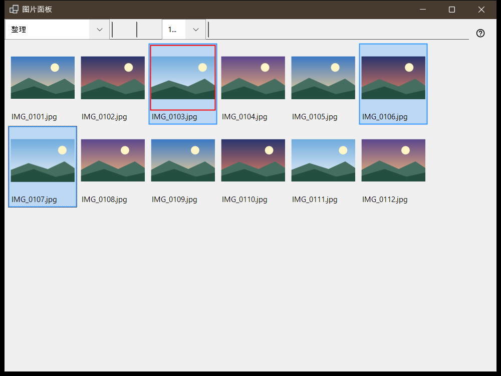
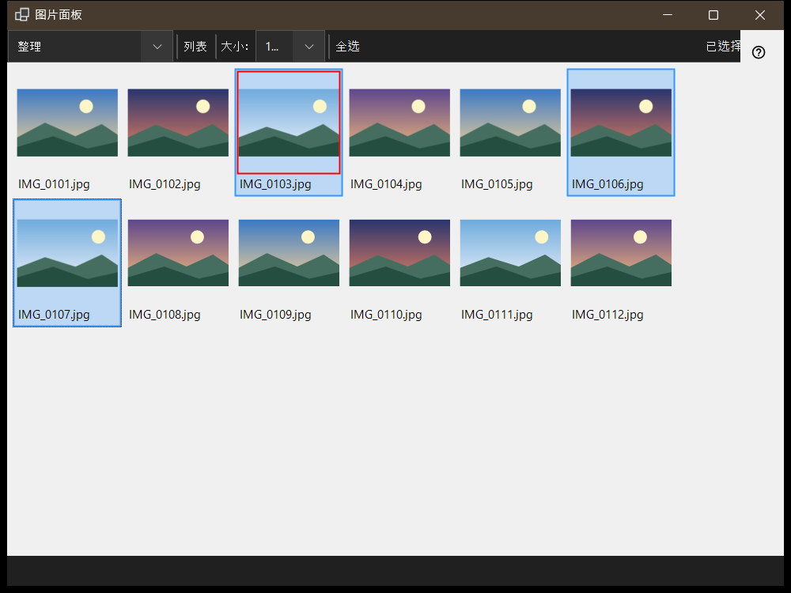

图片面板
用途说明
图片面板在查看器中按 F3 打开，有两种模式，在「面板模式」框中选择：「整理」是当前文件夹的缩略图网格；「文件管理器」是带有位置、文件夹和文件命令的浏览器。查看文件、选择文件和关闭面板都不会改变主窗口显示的内容。


操作顺序
- 在查看器中按 F3。
- 在「面板模式」中选择模式。
- 选择文件：单击，Shift+单击选择范围，Ctrl+单击切换单个文件，或拖动选框。
- 在整理模式下按 0-9 把所选内容移动到目标文件夹，或按 Shift 加主键盘区数字键复制；Ctrl+Z 撤销上一次操作。
- 双击文件或按 Enter，在主窗口中打开它。
- 按 Esc 取消正在进行的操作，再按一次 Esc 关闭面板。
界面元素
面板模式
「面板模式」在「整理」和「文件管理器」之间切换。整理模式显示当前文件夹的缩略图，便于快速移动和复制；文件管理器可浏览任意文件夹并提供文件命令。
大小、布局和选择
滑块（「大小：」）设置缩略图大小，「平铺」和「列表」按钮切换布局（Ctrl+L），选择计数器显示总数中已选了多少个文件。
选择与整理
单击选择，Shift+单击选择范围，Ctrl+单击切换单个文件，拖动则画出选框。Ctrl+A 全选，Ctrl+Shift+A 清除选择，Ctrl+I 反选，空格键标记文件，方向键、Home、End、PgUp 和 PgDn 用于移动。数字键 0-9 把所选内容移动到该键对应的目标文件夹，Shift 加主键盘区数字键复制，Del 删除，Ctrl+Z 撤销上一次操作。
筛选器和隐藏文件
内容筛选器可选择「媒体文件」、「媒体与文档」或「所有文件」，「隐藏」按钮用于显示或隐藏被隐藏的文件。「设置..」会打开设置窗口的「文件管理器」页，在那里设置显示模式、筛选器、位置和记住的排序方式。
文件命令
Ctrl+C、Ctrl+X 和 Ctrl+V 分别是复制、剪切和粘贴，F2 重命名，Ctrl+Shift+N 新建文件夹，Del 和 Shift+Del 删除所选项目，Alt+Enter 显示属性。在不同资源之间复制或移动要经过这台电脑。
创建 ZIP
「创建 ZIP」把所有选中的文件夹和文件打包成一个压缩包。删除原文件默认关闭，只有在压缩包经过验证并发布之后才允许。
解压到此处
「解压到此处」只处理一个选中的压缩包：文件夹和普通文件会保留，原压缩包留在原处，解压出的程序绝不会被运行。按 Esc 取消操作。